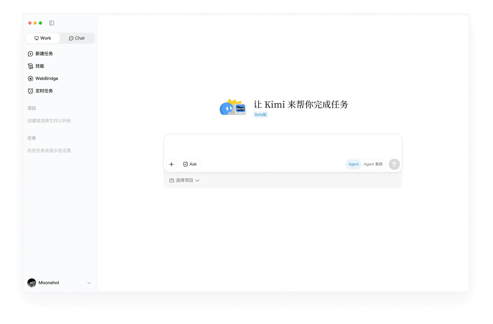

Kimi: Agent, Work, Code and Claw
Cloud research and office deliverables, local workspaces, coding and persistent tasks are separated, with real PDF/parallel-task tests and access limitations.

Sources checked: 6 October 2026. Official documentation, hands-on reports and personal accounts are distinguished; no standardized device retest was performed.
Product Layers
- Kimi chat: Q&A/uploaded materials/search and reasoning.
- Cloud Agent: Autonomous research and Office/website deliverables, with asynchronous background work; do not click Stop simply because the page has not changed.
- Agent Swarm: Complex parallel work/multiple outputs; do not equate model parameter counts with work quality.
- Kimi Work: A local assistant for Windows and Macs with Apple Silicon, with mounted directories, a browser extension, Python/Shell, scheduled tasks, and some pre-integrated financial data.
- Kimi Code: A CLI/editor coding product; API, Code, and consumer App pricing and limits are not interchangeable.
- Kimi Claw: A separate automation form; official help points to local/intranet connections. Specific deployment and quotas require verification for that product.M1, M2, M3
Five Complete Workflows
- Cross-checking PDFs (media hands-on test): On 2026-07-10, TechRadar placed two long PDFs in the same conversation → compared specified chapters → asked follow-up questions. The author rated the structure and accuracy positively. This evidence applies only to that task.M4
- Multitask competitive research (same hands-on test): Swarm researches in parallel → merges the results → a human checks them. The author found some subtasks incomplete without prominent flags. Auditing the deliverable matters more than the concurrency count.M4
- A runnable website (official): Goals/materials → Agent generates frontend, backend, and storage → preview → publish → download files. Official documentation explicitly notes that failure to run may relate to the sandbox, database, authentication, or not having published. The cloud Agent cannot directly read local files.M2
- A local quarterly report (official Work example): Specify a directory → search PDFs → compile a document while retaining a source directory → modify/run after user authorization. This is distinct from the older chat pattern of uploading a single file.M3
- Ongoing work (official Work workflow): Set up a daily briefing/data script → Cron runs in the background → results return to the workspace. Official guidance recommends enabling the setting to keep the computer awake; do not claim that local execution continues when the computer is shut down.M3
Experience, Timing, and Payment
Official guidance says typical Agent tasks take around 5–20 minutes, with complex Swarm tasks taking longer. It recommends breaking complex tasks into stages and acknowledges that repeated revisions may lose earlier details, and that ordinary Agent and multi-output mode differ. The documentation states the context as “256K characters” and gives inconsistent conversions; this report does not silently correct that into a precise token metric.M2 On July 27, a TechRadar author downloaded the iPhone App but could not use it because of a waiting list, illustrating an accessibility barrier. This failure must not be generalized into long-term unavailability for everyone.M5 Official plans change dynamically; this research does not substitute media-reported API unit prices for App subscription prices. No proprietary Kimi hardware was verified.
Sources and Evidence Identity
Official statements, media tests and individual comments are labeled separately. No year is inferred when a store review shows only a month and day; a few comments do not establish satisfaction rates.
| ID | Source/date | Type and use | URL |
|---|---|---|---|
| M1 | Kimi overview | Official product layers | https://www.kimi.ai/zh-hans/help/getting-started/overview |
| M2 | Kimi feature limits | Official boundaries for asynchronous work/output/timing/quotas/failures | https://www.kimi.ai/zh-hans/help/agent/agent-features-and-limits |
| M3 | Kimi Work | Official local/browser/Cron/authorization/platform information | https://www.kimi.com/products/kimi-work |
| M4 | TechRadar, 2026-07-10 | Author's hands-on PDF/Code/Swarm testing; commercial media site | https://www.techradar.com/pro/kimi-ai-review |
| M5 | TechRadar, 2026-07-27 | Individual case of author unable to access the iPhone App due to a waiting list | https://www.techradar.com/ai-platforms-assistants/i-tried-to-test-chinas-newest-chatgpt-rival-but-couldnt-get-in-and-it-exposed-the-next-big-problem-facing-the-major-ai-players |